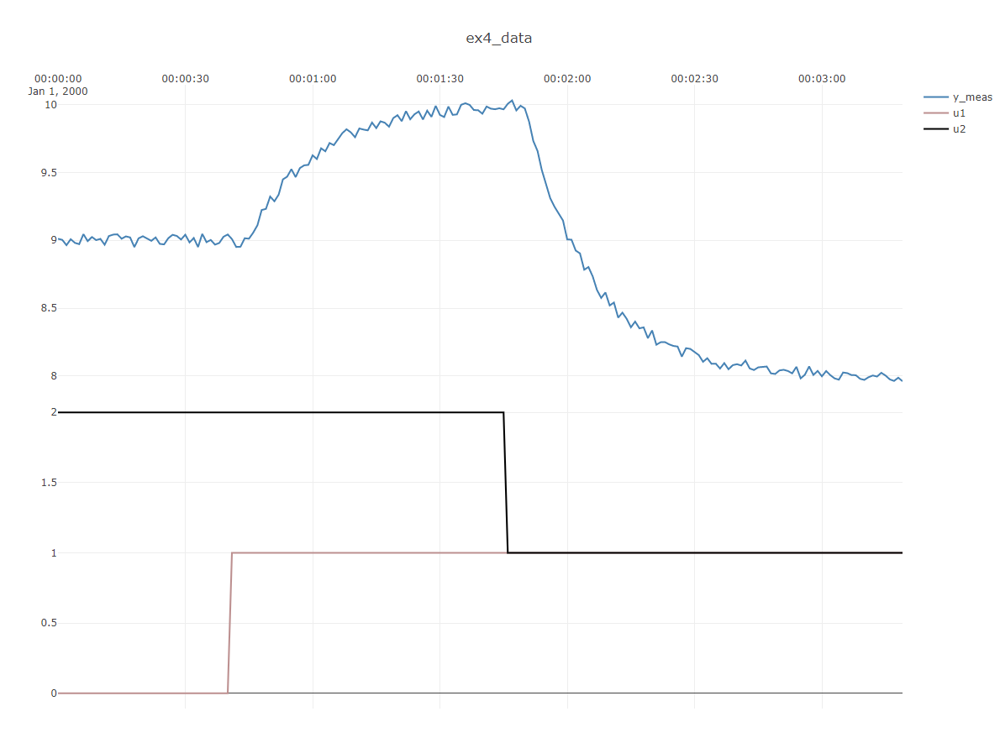
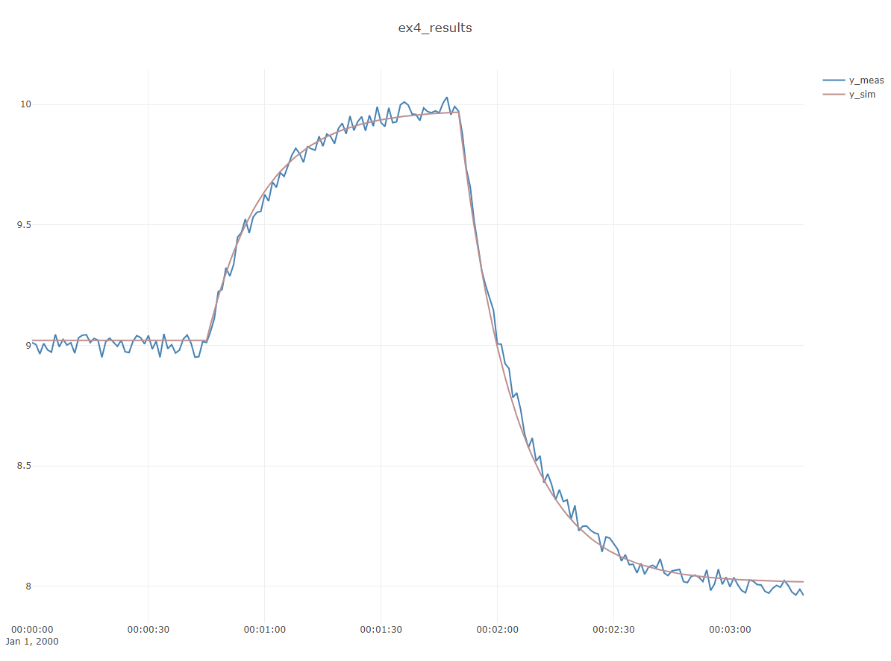

Example 4 : Fitting a dynamic model to transient data
In this example, it is shown how to use the built-in dynamic identification algorithm to find a dynamic model to describe a measured time-series depending on multiple inputs.
This example considers an "open-loop" subprocess as shown below:
 .
.
A synthetic dataset with two inputs u1 and u2 is created using ProcessSimulator
and the DefaultProcessModel (the output y_meas depends linearly on the two inputs), and noise
is added to the data. The advantage of a synthetic dataset is that we know the true underlying
parameters, which is very useful for testing and validating methods.
In this case the "true" time-delay of 5 seconds, time-constant of 15 seconds and process gains
{1,2} are chosen.
The aim of this example is to see how closely the DefaultProcessModelIdentifier is able to estimate these values.
The code to create the dataset, do the identification and create the plots is shown below:
int timeBase_s = 1;
double noiseAmplitude = 0.05;
var parameters = new UnitParameters
{
WasAbleToIdentify = true,
TimeConstant_s = 15,
ProcessGains = new double[] {1,2},
TimeDelay_s = 5,
Bias = 5
};
var model = new UnitModel(parameters, timeBase_s);
double[] u1 = TimeSeriesCreator.Step(40,200, 0, 1);
double[] u2 = TimeSeriesCreator.Step(105,200, 2, 1);
double[,] U = Array2D<double>.FromList(new List<double[]>{u1 ,u2});
var dataSet = new UnitDataSet(timeBase_s,U);
var simulator = new UnitSimulator(model);
simulator.SimulateYmeas(ref dataSet, noiseAmplitude);
Plot.FromList(new List<double[]> { dataSet.Y_meas, u1, u2 },
new List<string> { "y1=y_meas", "y3=u1", "y3=u2" }, timeBase_s,"ex4_data");
var modelId = new UnitIdentifier();
var identifiedModel = modelId.Identify(ref dataSet);
Plot.FromList(new List<double[]> { identifiedModel.FittedDataSet.Y_meas,
identifiedModel.FittedDataSet.Y_sim },
new List<string> { "y1=y_meas", "y1=y_sim"}, timeBase_s, "ex4_results");
Console.WriteLine(identifiedModel.ToString());
// compare dynamic to static identification
var regResults = (new Vec()).Regress(dataSet.Y_meas, U);
Plot.FromList(new List<double[]> { identifiedModel.FittedDataSet.Y_meas,
identifiedModel.FittedDataSet.Y_sim,regResults.Y_modelled },
new List<string> { "y1=y_meas", "y1=y_dynamic","y1=y_static" }, timeBase_s,
"ex4_static_vs_dynamic");
Console.WriteLine("static model gains:" + Vec.ToString(regResults.Gains,3));
The first plot shows the dataset, showing inputsu1, u2 and output y:

Notice of the time-delay and time-constant are clearly visible in this dataset. The resulting fit between model and dataset is shown below. The two time-series are virtually identical, except that the modeled output does not have any noise.

The resulting console output gives more detail on the parameters found:
DefaultProcessModel
-------------------------
ABLE to identify
TimeConstant : 14,1 sec
TimeDelay : 5 sec
ProcessGains : [0.958;1.96]
ProcessCurvatures : null
Bias : 8,87
u0 : [0.796;1.54]
-------------------------
fitting objective : 0,3136
fitting R2: 84,27
fitting : no error or warnings
Notice how the process gains [0.958;1.96] are fairly close to the true [1;2],
the time constant 14,1 sec is fairly close to the true 15 sec and the time delay is spot-on at 5 sec.
R-squared ("R2") is ~84 out of 100 maximum, and this indicates a relatively good match of the model.
R-squared could have been increased, and the even better estimates could have been obtained for a longer dataset, and by either including more steps in the data, or by fully allowing the first step response to reach steady-state before continuing with the second step. Reducing the noise also improves estimates and increases R2, but of course that is not an option in real-life.
Comparsion: static versus dynamic model
As an instructional example, the dynamic model above is compared to what is found by normal linear regression on
this dataset.
Linear regression is accomplished by Vec.Regress using the code below:
// compare dynamic to static identification
var regResults = Vec.Regress(dataSet.Y_meas, U);
Plot.FromList(new List<double[]> { identifiedModel.FittedDataSet.Y_meas,
identifiedModel.FittedDataSet.Y_sim,regResults.Y_modelled },
new List<string> { "y1=y_meas", "y1=y_dynamic","y1=y_static" }, timeBase_s,
"ex4_static_vs_dynamic");
Console.WriteLine("static model gains:" + Vec.ToString(regResults.Gains,3));
The resulting plot, which compares the dynamic and static models is shown below:

The model gains of the static model is [0.69;1.29], which is not quite as close as
the estimate [0.958;1.96] of the dynamic identification to the true values: [1;2].
Note
This example illustrates an extremely important but slightly subtle lesson about the utility of dynamic identification: If your data is dynamic/transient, using dynamic identification will result in better estimates, also for stationary terms. This means that even if you are only interested in the static gains of a system, you would benefit from estimating gains using dynamic identification if your data has visible transients.